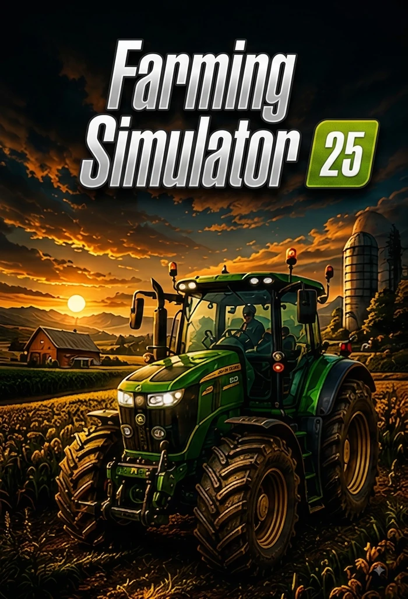
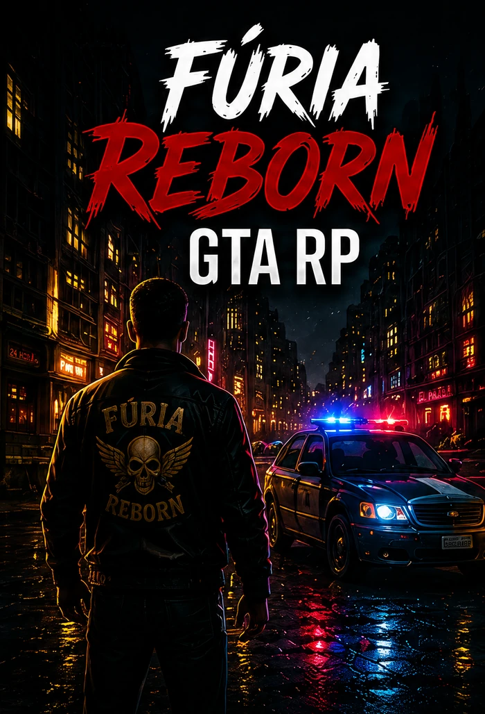
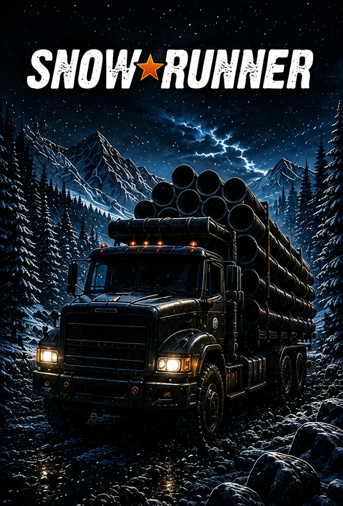
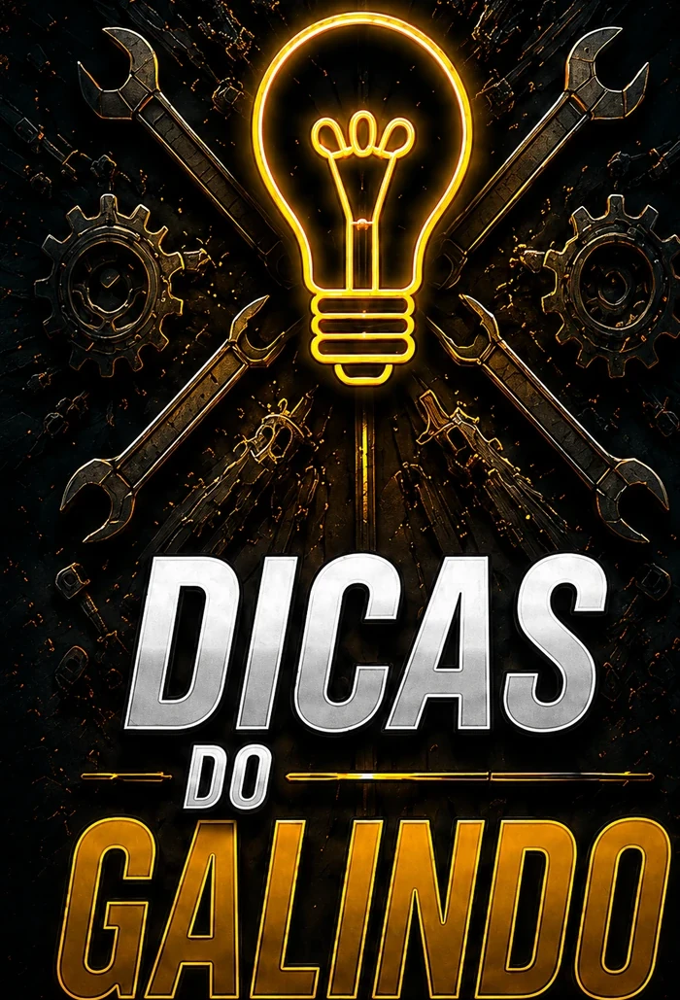
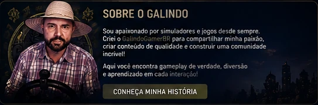

Última live do GalindoGamerBR
Transmissões
AO VIVO E EM DESTAQUE
Conteúdo
NOSSOS JOGOS

Carro-chefe
Farming Simulator 25
Fazendas, máquinas, produção, mods e histórias da comunidade.
Ver playlist →
Roleplay
Fúria Reborn • GTA RP
Roleplay imersivo, histórias e experiências na comunidade.
Ver playlist →
Simulação
SnowRunner
Expedições, lama, carga pesada e desafios extremos.
Ver playlist →Estradas
Euro Truck Simulator 2
Viagens, caminhões e muita estrada.
Ver playlist →
Tutoriais
Dicas do Galindo
Tutoriais, truques, configurações e dicas que fazem a diferença.
Ver playlist →Comunidade
COMUNIDADE É TUDO!
Aqui o jogo é o ponto de encontro. A resenha, a amizade, a ajuda e as histórias são o que fazem tudo continuar.
LIVEMultiplataforma
FS25Carro-chefe
RPFúria Reborn
BRComunidade
Onde a comunidade acontece
CONECTE-SE COM O GALINDO
Lives, novidades, cortes e resenha. Cada rede tem seu espaço — e você pode acompanhar tudo de perto.
Central da comunidade
TODOS OS CAMINHOS
Área VIP
GRUPO VIP DO CANAL
Um espaço exclusivo e propositalmente seleto. O VIP é uma forma de reconhecer quem fortalece o canal e ajuda a manter vivo o servidor, os projetos e toda a resenha que construímos juntos.
01
YouTube
Membro Ouro ou acima.
02
TikTok
Super Fan.
03
Discord
Entrar e acessar as regras.
04
Regras
Assistir ao vídeo e ler tudo.
05
Solicitação
Estar de acordo e solicitar entrada.
06
Liberação
Conferência dos requisitos pelo administrador.
1. ENTRAR NO DISCORD2. SOLICITAR ENTRADA VIPVER PASSO A PASSO
A liberação é feita por um administrador após conferência dos requisitos.

Sobre o Galindo
POR TRÁS DA LIVE, EXISTE UMA HISTÓRIA.
Tenho 41 anos, sou casado, trabalho na cidade e continuo sendo aquele cara que se apaixonou por jogos quando ainda era criança. A história começou nos videogames, passou pela época do Windows 95 e atravessou diferentes fases da vida.
Hoje, as lives são minha forma de mostrar essa paixão para o mundo. É onde eu jogo, conheço pessoas, troco ideia, dou risada e, quando alguém precisa, tento deixar uma palavra amiga.
O canal não nasceu para ser apenas mais uma transmissão. Nasceu para criar encontros. Se alguém entra por causa do Farming Simulator, fica pela resenha e volta porque se sentiu bem-vindo, então já valeu a pena.
41 anosCasadoGamer desde criançaWindows 95SimuladoresRoleplayComunidade
CONHEÇA MINHA HISTÓRIA →Parceiros e marcas
UMA COMUNIDADE REAL TAMBÉM PODE GERAR VALOR PARA QUEM CAMINHA JUNTO.
O GalindoGamerBR está sendo construído com trabalho, constância e proximidade. Se sua marca acredita em projetos humanos, comunidade e entretenimento de verdade, existe espaço para uma parceria que faça sentido para os dois lados.
Não quero apenas colocar uma logo no site. Quero criar presença, relacionamento e uma história que a comunidade reconheça.
Contato
FALE COM O GALINDO
Parcerias, projetos e assuntos da comunidade.
Contato profissionalE-mail: contato@galindogamerbr.com.brParcerias: parcerias@galindogamerbr.com.br
Fique por dentro
NOVIDADES E LIVES
Receba avisos, novidades e conteúdos da comunidade.